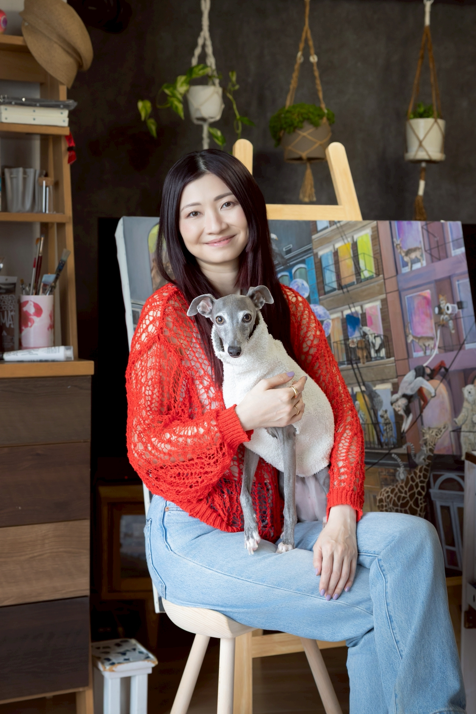

ANNA RED
アンナレッド / Contemporary Artist
色と物語で描く日常のファンタジー

私は、ファンタジーとして日常を生きています。
幼少期、柵に囲まれたような閉ざされた環境の中で、想像の世界を生み出すことだけが唯一の自由でした。
世間一般の日常は、当時の私の世界には存在すらしない、無縁で素敵なもの。
その届かなかった憧れの中を今、私は生きています。
自らの意思で掴み取ってきた私のファンタジーは、日々暮らしの素晴らしさを再発見するためのフィルターによるものなのです。
メルボルンをはじめ、海外で過ごした日々やストリートパフォーマンス、歩みの中で出会ってきた魅力的な人々、目にした景色、心に深く刻まれた経験が、私の居場所になりました。
途中で病という、不都合な事実に出会いましたが、死を意識する最中にあっても、夢見た日常が続いていくことに目を向ける生き方はぶれることがなく、どんな時でも私を自由へ繋ぎ止めました。
私の描く世界に動物たちが多いのは、その存在や動きそのものが、シンプルに生活を語ってくれるからです。
たとえば、共に暮らす愛犬が仲間の犬たちと無邪気に遊ぶ様子の中にある社会や生命の輝きは、私にとって大切なインスピレーションの一例です。
日常で経験する心動く瞬間が私の中でファンタジーへと書き換えられ、ある時は別の動物の姿を借りて、ある時は風景として、目の前の生命や世界の断片が、私だけのフィルター越しに見え、アソビで描き出していく。
当たり前だと思われる日常に、もう一度、新しく出会い直す物語として。
私は、この世界を描き続けていきます。